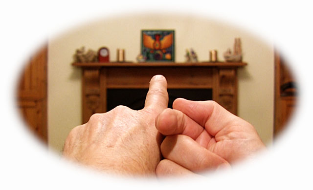

Point with one index finger out at the world and with your other index finger in at your no-face.
The finger pointing outwards points at a scene full of countless shapes and colours. It’s a complicated picture. The more you look at it, the more there is to see. And most of it is hidden – obscured by other things in one way or another.
The view in is different. Here the space is not hidden at all. You see all of it, all at once. There I see only part of the room, but here I see all of the space. There is nothing more to view here, nothing concealed. Nor is this Being that I am here – and that you are here (I suggest) – distant. It’s right here.
What could be simpler than seeing this – and being this? It is uncomplicated, transparent, open to inspection, nearer than near, given in its entirety…
Two-way attention reveals that we cannot see this boundless space without seeing something in it, cannot hear this silence without hearing sounds in it, cannot attend to this awake nothingness without finding something emerging miraculously from it. This aware emptiness is never just empty – it is always filled with something. What a wonder!